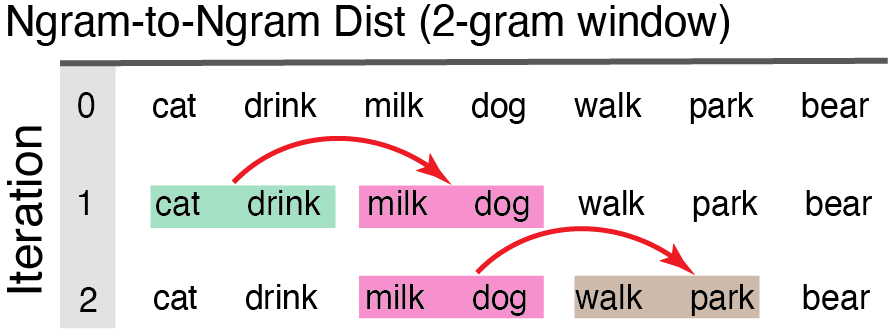
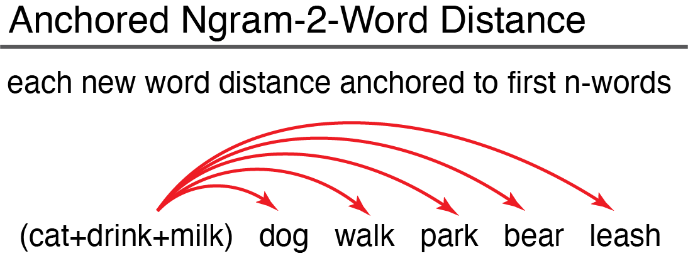

Before Starting
SemanticDistance nominally requires a dataframe with at least one column variable and one row of text. The package is capable of processing many more dataframe formats (e.g., word pairs arrayed in columns, conversation transcripts, unordered word lists). SemanticDistance will retain all of your original metadata after splitting/unlisting your text into a one-word-per-row structure. This sequential structure is ideal for joining distance values to timestamps and other variables as language unfolds (e.g., reaction time, pupil diameter).
Install & Load
Install the development version of SemanticDistance from GitHub using devtools.
#install.packages("devtools")
#devtools::install_github("Reilly-ConceptsCognitionLab/SemanticDistance")
library(SemanticDistance)The semantic distance functions work by indexing unique numeric identifiers. You MUST first clean/prep your raw text to append these identifers. Prepare your lexical data for computing pairwise semantic distances by first doing the following:
- Read your data into R. Label your text and metadata columns however you like.
- Your dataframe should contain at least one column with the target string data (e.g., mytext).
- Identify the format of your sample (e.g., monologue, dialogue, columns, unstructured).
- Decide on your cleaning parameters (lemmatize, omit stopwords, omit punctuation).
- Run the approproate cleaning function specifying the parameters that best fit your data and aims.
1.1 Clean Your Monologue Transcript (clean_monologue)
A monologue transcript consists of any ordered text sample NOT delineated by a talker/speaker (e.g., stories, narratives). Clean a monologue transcript by calling the ‘clean_monologue’ function. Specific arguments include:
df = raw dataframe with at least one column of text
wordcol = quoted variable reflecting the column name where your target text lives (e.g., ‘mytext’)
clean = applies cleaning functions (e.g., punct out, lowercase, etc); default is TRUE
omit_stops = omits stopwords, default is TRUE
lemmatize = transforms raw word to lemmatized form, default is TRUE
Example Raw Monologue Transcript and Cleaning
MyCleanMonologue <- clean_monologue(MonologueSample1, 'word', clean=T)
head(MyCleanMonologue, n=10)
#> # A tibble: 10 × 3
#> word id_orig word_clean
#> <chr> <fct> <chr>
#> 1 The dog is blue. 1 ""
#> 2 The dog is blue. 1 "dog"
#> 3 The dog is blue. 1 "blue"
#> 4 Dog 2 "dog"
#> 5 Dog 3 "dog"
#> 6 Some 4 ""
#> 7 My name is Frank. 5 ""
#> 8 My name is Frank. 5 "name"
#> 9 My name is Frank. 5 "frank"
#> 10 Dog 6 "dog"1.4 Clean Dialogue Transcript (clean_dialogue)
This could be a conversation transcript or any language sample where you care about talker/interlocutor information (e.g., computing semantic distance across turns in a conversation). Your dataframe should nominally contain a text column and a speaker/talker column. Arguments clean_dialogue are:
| df = your raw dataframe with at least one column of text AND a talker column | wordcol = column name (quoted) containing the text you want cleaned | whotalks = column name (quoted) containing the talker ID (will convert to factor) | clean = T/F (default is T) applies cleaning functions | omit_stops = T/F omits stopwords, default is TRUE | lemmatize = T/F transforms raw word to lemmatized form, default is TRUE
Example ‘clean_dialogue’ on Dialogue Transcript
MyCleanDialogue <- clean_dialogue(DialogueSample1, "word", "speaker", omit_stops=T, lemmatize=T)
head(MyCleanDialogue, n=6)
#> # A tibble: 6 × 6
#> word speaker ID_Orig talker word_clean turn_count
#> <chr> <chr> <fct> <fct> <chr> <dbl>
#> 1 Hi Peter Mary 1 Mary peter 1
#> 2 Donkeys are gray Mary 2 Mary donkey 1
#> 3 Donkeys are gray Mary 2 Mary gray 1
#> 4 Leopard Mary 3 Mary leopard 1
#> 5 pop goes the weasel Mary 4 Mary pop 1
#> 6 pop goes the weasel Mary 4 Mary go 11.2 Clean Word Pairs Arrayed in Columns (clean_2columns)
SemanticDistance also computes pairwise distance for data arrayed in columns. Run the function, the cleaned columns will appear in the dataframe. Arguments to the ‘clean_monologue’ function call are:
| df = your raw dataframe with at least one column of text | word1 = quoted variable reflecting the column name where your first word lives | word2 = quoted variable reflecting the column name where your first word lives | clean = T/F (default is T) applies cleaning functions | omit_stops = T/F omits stopwords, default is TRUE | lemmatize = T/F transforms raw word to lemmatized form, default is TRUE
Example Column Arrays Word Pair Cleaning
MyClean2Columns <- clean_2columns(ColumnSample, 'word1', 'word2', clean=T, omit_stops=T, lemmatize=T)
head(MyClean2Columns, n=6) #view head cleaned data
#> word1 word2 id_orig word1_clean1 word2_clean2
#> 1 Dog trumpet 1 dog trumpet
#> 2 the BANANA 2 <NA> banana
#> 3 rat astronaut 3 rat astronaut
#> 4 *&^% lizard 4 <NA> lizard
#> 5 bird bird 5 bird bird
#> 6 shark shark 6 shark shark1.3 Clean Unordered Word List (clean_4clustering)
This cleaning option is used for prepping a vector of words for hierarchical clustering. Word order is no longer a factor since all words will be shuffled. This cleaning function retains only one instance of a word (no duplicates). Arguments to the ‘clean_4clustering’ function call are:
| df = your raw dataframe with at least one column of text | wordcol = quoted variable reflecting where your text lives | clean = T/F (default is T) applies cleaning functions | omit_stops = T/F omits stopwords, default is TRUE | lemmatize = T/F transforms raw word to lemmatized form, default is TRUE
Example ‘clean_4clustering’ on Unordered Word List
#Run clean fn
MyCleanCluster <- clean_4clustering(FakeCats, wordcol="word", clean=TRUE, omit_stops=TRUE, lemmatize=TRUE)
head(FakeCats, n=8)
#> ID_JR word category prediction
#> 1 1 trumpet music within
#> 2 2 trombone music within
#> 3 3 flute music within
#> 4 4 piano music within
#> 5 5 guitar music within
#> 6 6 cymbals music within
#> 7 7 horn music within
#> 8 8 drum music within—Step 2: Compute Semantic Distance—
SemanticDistance will append cosine distance values between each pair of elements specified by the user (e.g., word-to-word, ngram-to-word). These distance values are derived from two large lookup databases in the package with fixed semantic vectors for >70k English words. CosDist_Glo reflects cosine distance between vectors derived from training a GLOVE word embedding model (300 hyperparameters per word). CodDist_SD15 refects cosine distance between two chunks (words, groups of words) characterized across 15 meaningful perceptual and affective dimensions (e.g., color, sound, valence).
Users specify an ngram window size. This window rolls successively over your language sample to compute a semantic distance value for each new word relative to the n-words (ngram size) before it. This model of compouting distance is illustrated in the figure. The larger your specified ngram size the more smoothed the semantic vector will be over your language sample. Once you settle on a window size and clean your language transcript (works for monologues only), you are ready to roll. Here’s the general idea…
2.1: Rolling Ngram-to-Word Distance (dist_ngram2word)

Remember to call a cleaned/prepped dataframe! Arguments to ‘dist_ngram2word_roll’ are:
| dat dataframe cleaned and prepped
| ngram ngram window size preceding each new content word
Output ‘dist_ngram2word’ on monologue transcript
MyMonologueDists <- dist_ngram2word(MyCleanCluster, ngram=1) #distance word-to-word
head(MyMonologueDists, n=8)
#> # A tibble: 8 × 8
#> ID_JR word category prediction id_orig word_clean CosDist_1gram_glo
#> <int> <chr> <chr> <chr> <fct> <chr> <dbl>
#> 1 1 trumpet music within 1 trumpet NA
#> 2 2 trombone music within 2 trombone 0.572
#> 3 3 flute music within 3 flute 0.670
#> 4 4 piano music within 4 piano 0.451
#> 5 5 guitar music within 5 guitar 0.273
#> 6 6 cymbals music within 6 cymbal 0.929
#> 7 7 horn music within 7 horn 0.933
#> 8 8 drum music within 8 drum 0.720
#> # ℹ 1 more variable: CosDist_1gram_sd15 <dbl>2.2: Ngram-to-Ngram Distance (dist_ngram2ngram)
User specifies n-gram size (e.g., ngram=2). Distance computed from each two-word chunk to the next iterating all the way down the dataframe until there are no more words to ‘fill out’ the last ngram.

Arguments to dist_ngram2ngram are:
| dat = dataframe w/ a monologue sample cleaned and prepped
| ngram = chunk size (chunk-to-chunk)
Output ‘dist_ngram2ngram’ on monologue transcript
#Give the function a cleaned monologue transcript
MyNgramChunkDists <- dist_ngram2ngram(MyCleanMonologue, ngram=2)
head(MyNgramChunkDists, n=8)
#> # A tibble: 8 × 5
#> id_orig word_clean CountID_Ngram2 CosDist_2gram_GLO CosDist_2gram_SD15
#> <fct> <chr> <fct> <dbl> <dbl>
#> 1 1 "" 1 NA NA
#> 2 1 "dog" 1 NA NA
#> 3 1 "blue" 2 NA NA
#> 4 2 "dog" 2 0.173 0.125
#> 5 3 "dog" 3 NA NA
#> 6 4 "" 3 0.173 0.125
#> 7 5 "" 4 0.496 1.09
#> 8 5 "name" 4 0.496 1.092.3: Turn-by-Turn Distance in Dialogue (dist_dialogue)
Averages the semantic vectors for all content words in a turn. Computes the cosine distance to the average of the semantic vectors of the content words in the subsequent turn.
2.4: Distance Word Pairs Arrayed in 2 Columns (dist_2cols)
When your data are arrayed in two columns and you are interested in computing pairwise distance across the columns. The only critical argument is your dataframe name. Remember to pass a cleaned dataframe (even if you disable stopwords and lemmatization). Arguments to the function:
| dat = your cleaned dataframe with two paired columns of text
Output ‘dist_2cols’ on 2-column arrayed dataframe
MyDistsColumns <- dist_2cols(MyClean2Columns) #only argument is dataframe
head(MyDistsColumns, n=8)
#> word1 word2 id_orig word1_clean1 word2_clean2 CosDist_SD15 CosDist_GLO
#> 1 Dog trumpet 1 dog trumpet 0.4534507 0.8409885
#> 2 the BANANA 2 <NA> banana NA NA
#> 3 rat astronaut 3 rat astronaut 1.2154729 0.9272540
#> 4 *&^% lizard 4 <NA> lizard NA NA
#> 5 bird bird 5 bird bird 0.0000000 0.0000000
#> 6 shark shark 6 shark shark 0.0000000 0.0000000
#> 7 table 38947 7 table <NA> NA NA
#> 8 Dog leash 8 dog leash 0.6760924 0.50140432.5: Distance fixed onset cluster to each new word (anchor_dist)
This approach models the semantic distance from each successive new word in a language sample to the average of the semantic vectors for the first block of 10 content words in that sample. This anchored distance provides a metric of overall semantic drift as a language sample unfolds relative to a fixed starting point.
